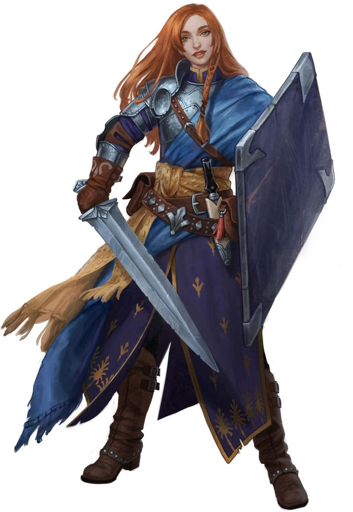

Cofeh Inh
Personnage¶
Race : Humain
Classe : Paladin
Niveau : 1 (BM +2)
Points de vie : 12
Vitesse : 30 ft.
| FOR | DEX | CON | INT | SAG | CHA |
|---|---|---|---|---|---|
| 14 (+2) | 14 (+2) | 14 (+2) | 7 (-2) | 13 (+1) | 14 (+2) |
| ◎ +2 | ◎ +2 | ◎ +2 | ◎ -2 | ◉ +3 | ◉ +4 |
| Compétences | |
|---|---|
| ◎ Acrobaties (Dex) : +2 | ◎ Investigation (Int) : -2 |
| ◎ Arcanes (Int) : -2 | ◉ Médecine (Sag) : +3 |
| ◎ Athlétisme (For) : +2 | ◎ Nature (Int) : -2 |
| ◎ Discrétion (Dex) : +2 | ◎ Perception (Sag) : +1 |
| ◉ Dressage (Sag) : +3 | ◎ Persuasion (Cha) : +2 |
| ◎ Escamotage (Dex) : +2 | ◉ Religion (Int) : ±0 |
| ◎ Histoire (Int) : -2 | ◎ Représentation (Cha) : +2 |
| ◎ Intimidation (Cha) : +2 | ◉ Survie (Sag) : +3 |
| ◉ Intuition (Sag) : +3 | ◎ Tromperie (Cha) : +2 |
Fiche récapitulative pour ceux qui ont la flemme (Merci Gemini !)
Vous êtes Cofeh, une paladine à la foi simple et inébranlable, dont la force et l'optimisme sont aussi éclatants que son armure, et dont la solution à la plupart des problèmes est de foncer tête baissée pour protéger les innocents.
Objectif pour la session :
Votre mentor, le Père Elric, vous a envoyé dans le monde pour "être le bouclier des faibles". Votre objectif est donc très simple : trouver des gens qui ont des ennuis, identifier le "méchant" de l'histoire, et le punir très fort pour que les gens n'aient plus d'ennuis.
Parlez Simplement, Agissez Directement : Utilisez des phrases courtes et des mots simples. Votre personnage ne comprend pas la subtilité. Face à un problème, votre premier réflexe n'est pas de réfléchir, mais d'agir. Foncez, posez les questions (souvent très naïves) après. "Pourquoi est-il méchant ? On devrait lui demander. Après l'avoir arrêté."
Le Bulldozer du Bien : Vous êtes un torrent d'énergie positive et de protection. Adoptez une posture héroïque, donnez des grandes tapes dans le dos de vos amis, et soyez toujours la première volontaire pour une tâche difficile ou dangereuse. Votre enthousiasme est votre plus grande force.
L'Armure est l'Âme : Votre armure est le symbole de votre pureté. Passez du temps à la polir. Votre bouclier est une extension de vos émotions : brandissez-le fièrement, cachez-vous un peu derrière quand vous êtes perplexe. Rappelez-vous votre défaut : vous préférez "manger votre armure" plutôt que d'admettre que vous avez eu tort.
Maîtrises¶
Armure : Armures Légères, Armures Moyennes, Armures Lourdes, Boucliers
Armes : Armes Simples, Armes Martiales
Outils : Ustensiles de Cuisinier, Véhicules Terrestres
Langues : Commun, Céleste
Description¶
Âge : 21 ans
Taille : 1,78 m
Poids : 76 kg
Cofeh est une vision de détermination et de ferveur incarnée. Solidement bâtie, avec des épaules larges et une carrure forgée par l'entraînement et une vie de labeur, elle a la présence physique d'un véritable rempart. Pourtant, elle ne dégage pas l'aura d'une noble guerrière distante ou d'un juge austère, mais plutôt celle d'une sœur aînée protectrice, incroyablement enthousiaste et toujours prête à l'action.
Son trait le plus frappant est sa chevelure : une cascade de cheveux roux flamboyants, épais et indisciplinés, qu'elle tente de maîtriser en tresses simples et pratiques. Invariablement, des mèches rebelles s'en échappent pour encadrer un visage ouvert et honnête, parsemé de taches de rousseur. Son visage est un livre ouvert, incapable de dissimuler la moindre émotion, et il est le plus souvent illuminé par un sourire large et radieux. Ses yeux sont d'un vert franc et sincère, et ils pétillent d'une conviction et d'un optimisme à toute épreuve.
Elle est revêtue d'un harnois de plates complet. Ce n'est pas une armure d'apparat, ornée de gravures complexes ou de filigranes d'or. C'est une armure de soldat, fonctionnelle et robuste, portant les marques de quelques combats passés : une éraflure sur une épaulière, une légère bosse sur un gantelet. Cependant, chaque pièce est d'une propreté méticuleuse, polie avec une ardeur quasi religieuse jusqu'à ce qu'elle brille sous le soleil. Pour Cofeh, une armure propre est le reflet d'une âme pure.
Elle se bat avec l'équipement classique du protecteur. Dans une main, elle tient une épée longue fiable et sans fioritures, son pommeau enveloppé de cuir usé. De l'autre, elle porte un solide tarja. En son centre est peint, avec une application sincère mais un peu maladroite, le symbole sacré de son dieu : la Trifecta d'Éléments (une petite étoile, une clé délicate et un petit bouclier).
En somme, Cofeh ressemble exactement à ce qu'elle est : un chevalier en armure étincelante, un phare de bonté et de force, aussi simple et directe dans son apparence que dans son cœur.

Aptitudes¶
Aptitudes de Race¶
Maître des Armures Lourdes¶
Vous savez utiliser votre armure pour dévier les coups qui vous seraient létaux. Vous bénéficiez de l'effet suivant :
- Tant que vous portez une armure lourde, les dégâts contondants, perçants et tranchants que vous prenez de sources non magiques sont réduits de 3.
Aptitudes de Classe¶
Instinct Divin¶
La présence de grands maux pèse sur vos sens comme une odeur désagréable, et le bien raisonne comme de la musique paradisiaque pour vos oreilles. Pour une action, vous pouvez vous ouvrir à la détection de telles forces. Jusqu'à la fin de votre prochain tour, vous connaissez la localisation de n'importe quel céleste, fiélon ou mort-vivant à 60 ft. qui n'est pas derrière une couverture totale. Vous connaissez le type de chacune des présences que vous détectez, mais pas son identité. Dans ce même rayon, vous détectez également la présence de tout endroit ou objet qui aurait été consacré ou désacralisé, comme avec le sort sanctification.
Vous pouvez utiliser cette aptitude un nombre de fois égal à 1 + votre modificateur de Charisme. Lorsque vous terminez un repos long, vous regagnez toutes les utilisations dépensées.
Imposition des Mains¶
Votre toucher béni peut soigner les blessures. Vous disposez d'un réservoir de pouvoir soignant qui se renouvelle lorsque vous terminez un repos long. Avec ce réservoir, vous pouvez rendre un nombre de points de vie égal à 5 fois votre niveau de paladin.
Pour une action, vous pouvez toucher une créature et extraire du pouvoir de ce réservoir afin de rendre des points de vie à une créature.
Vous pouvez également dépenser 5 points du réservoir pour soigner une maladie ou un poison chez une créature. Vous pouvez soigner plusieurs maladies ou neutraliser plusieurs poisons avec une seule utilisation en dépensant bien 5 points par maladie et/ou poison.
Cette aptitude n'a aucun effet sur les Constructions.
Équipement¶
- Une épée longue et un Bouclier
- Une masse d'armes
- Un sac d'ecclésiastique
- Une cotte de mailles et un pendentif confié par le père Elric, servant de symbole sacré
- Des ustensiles de cuisinier
- Une pelle, un pot en fer
- 10 Pièces d'Or
Historique¶
Cofeh n'est pas née dans une grande famille de chevaliers, et son enfance n'a pas été marquée par une prophétie ou une tragédie. Elle a grandi dans le petit village de Haut-Clerc, une communauté paisible où le plus grand événement de l'année était la foire aux récoltes. Orpheline, elle fut recueillie et élevée par le Père Elric, le prêtre local d'un modeste prieuré dédié à Ludovar, le dieu de la bravoure et de la persévérance.
Dès son plus jeune âge, il était évident que Cofeh n'était pas destinée à devenir une érudite. Les longues heures d'étude des textes sacrés étaient une torture pour elle. Elle s'endormait pendant les sermons sur la théologie complexe et était incapable de retenir les litanies. Mais là où les autres enfants apprenaient les mots, Cofeh apprenait les actes. Quand le Père Elric lisait une parabole sur la compassion, Cofeh ne retenait qu'une chose : "Alors, il faut être gentil !". Et elle l'était. Elle passait ses journées à aider, portant les seaux d'eau pour les plus âgés, réparant les clôtures des fermiers, et défendant les enfants plus petits dans la cour du village. Sa foi n'était pas dans les livres, elle était dans ses mains et dans son cœur simple.
Le jour où sa vie bascula, le ciel était d'un bleu parfait. Une petite bande de bandits, plus arrogants que réellement dangereux, descendit de la colline pour rançonner les villageois sur la place du marché. La peur s'installa. Les portes se fermèrent, les gens se cachèrent. Mais Cofeh, qui revenait des champs avec une fourche sur l'épaule, ne vit pas le danger. Elle vit une injustice. Elle vit des gens plus forts qui s'en prenaient à des gens plus faibles.
Sans une once d'hésitation, elle planta sa fourche dans le sol et se posta entre le chef des bandits et une famille de boulangers terrifiés. Le bandit éclata de rire en voyant cette jeune femme grande et robuste, mais à l'air si simplet. "Pousse-toi de là, jeune fille, ou tu vas te faire mal."
Cofeh ne bougea pas. Elle fronça les sourcils et répondit d'une voix claire et forte, sans aucune trace de peur : "Non. Ce que vous faites, ce n'est pas juste. Vous ne toucherez pas à ces gens."
Sa conviction était si pure, si absolue et si dénuée de doute qu'elle devint un conduit. À cet instant, une colonne de lumière dorée perça les nuages et la frappa, non pas pour la blesser, mais pour l'investir. Son corps se nimba d'une aura éclatante, et la vieille fourche en bois se mit à briller d'une chaleur sainte. Le chef des bandits, aveuglé et stupéfait, tenta de la bousculer. D'un simple mouvement, elle le repoussa. Le contact, chargé d'énergie divine, l'envoya rouler dans la poussière, sonné. Ses complices, voyant cette paysanne transformée en un avatar de fureur sacrée, n'attendirent pas leur reste et s'enfuirent à toutes jambes.
Ce jour-là, le Père Elric comprit. La foi de Cofeh n'avait pas besoin de mots compliqués. Devant l'autel du prieuré, il lui demanda de prêter son serment. Son serment de Paladin fut à son image, simple et direct : "Je promets de toujours dire la vérité. D'être courageuse. D'aider les gens qui en ont besoin. Et de punir très fort les méchants. Voilà."
Les années qui suivirent, Cofeh devint la protectrice non officielle de Haut-Clerc. Une protectrice pleine d'enthousiasme, et parfois un peu trop zélée. Un différend entre voisins ? Cofeh arrivait, son aura brillant légèrement, pour imposer une réconciliation. Un loup un peu trop près d'un troupeau ? Elle le faisait fuir avec un cri de guerre et une lueur divine dans les yeux.
Le Père Elric, voyant que son énergie et sa lumière étaient trop grandes pour leur petit village, la convoqua. "Cofeh," lui dit-il avec un sourire fatigué mais fier, "ta place n'est plus ici. Le monde est grand et plein de gens qui ont besoin d'aide. Ta lumière est un phare. Va, et sois le bouclier des innocents."
Avec la bénédiction de son mentor, un vieil écu, une épée et le sourire le plus radieux que le monde ait jamais vu, Cofeh se mit en route. Elle ne partait pas en quête de gloire ou de richesses, mais pour une mission bien plus simple : trouver des gens à aider, et des méchants à qui faire regretter de s'être levés ce matin-là.
Aptitude d'Historique¶
La détermination de Cofeh à se jeter dans la mêlée pour protéger les autres est sans égale. Lorsqu'elle utilise son action pour Foncer (Dash), elle peut se déplacer de 10 pieds supplémentaires. De plus, si elle termine ce mouvement à 5 pieds ou moins d'une créature alliée, cette dernière est inspirée par son arrivée héroïque et gagne un nombre de points de vie temporaires égal à son modificateur de Charisme.
Traits de Personnalité¶
Traits : Si je vois quelqu'un en difficulté, je me dois de l'aider. Réfléchir c'est pour les autres, quand est-ce qu'on s'y met ?
Idéal : Tout le monde mérite d'être traité avec dignité et respect.
Lien : Je protège ceux qui ne peuvent se protéger.
Défaut : Je préférerais manger mon armure que d'admettre que j'ai tort.
Alignement : Loyal Bon
Conseils de jeu¶
Cofeh utilise un vocabulaire simple et des phrases courtes. Elle ne cherche jamais à paraître intelligente ou éloquente. Elle dit ce qu'elle pense de la manière la plus directe possible. Au lieu de dire "Cette situation présente un dilemme moral complexe", elle dira "Je ne sais pas si c'est bien ou mal. C'est compliqué !". Elle n'a pas de filtre. Elle peut poser des questions d'une naïveté désarmante à n'importe qui, y compris au grand méchant de la campagne : "Mais pourquoi est-ce que vous voulez détruire le monde ? Tout le monde va être très triste après." Ses tentatives pour encourager ses compagnons sont courtes, directes et vont droit au cœur. "Ne t'inquiète pas ! On est ensemble, et on est les gentils, alors on va gagner !", "Relève-toi ! Les gens ont besoin de nous !". Elle prend les expressions au pied de la lettre. Si un compagnon roublard dit "Donnez-moi une minute, je vais jeter un œil", elle pourrait répondre d'un air inquiet "Ne fais pas ça ! Tu en as besoin pour voir !".
Au moindre signe de tension ou de danger potentiel (même une simple dispute verbale), elle adopte instinctivement une posture de combat : jambes légèrement écartées, dos droit, une main reposant sur le pommeau de son épée. Elle est toujours "prête". Dans les moments calmes, elle sort toujours un chiffon et se met à polir une partie de son armure – un gantelet, son plastron, son casque. Pour elle, la brillance de son armure est le reflet direct de la pureté de son âme et de sa cause. Une armure propre et étincelante est un devoir. Son bouclier n'est pas qu'une pièce d'équipement. Quand elle est fière, elle le bombe. Quand elle est perplexe, elle peut se cacher un peu derrière, comme un enfant. Quand elle fait une déclaration, elle le brandit légèrement. C'est une extension de sa personnalité protectrice.